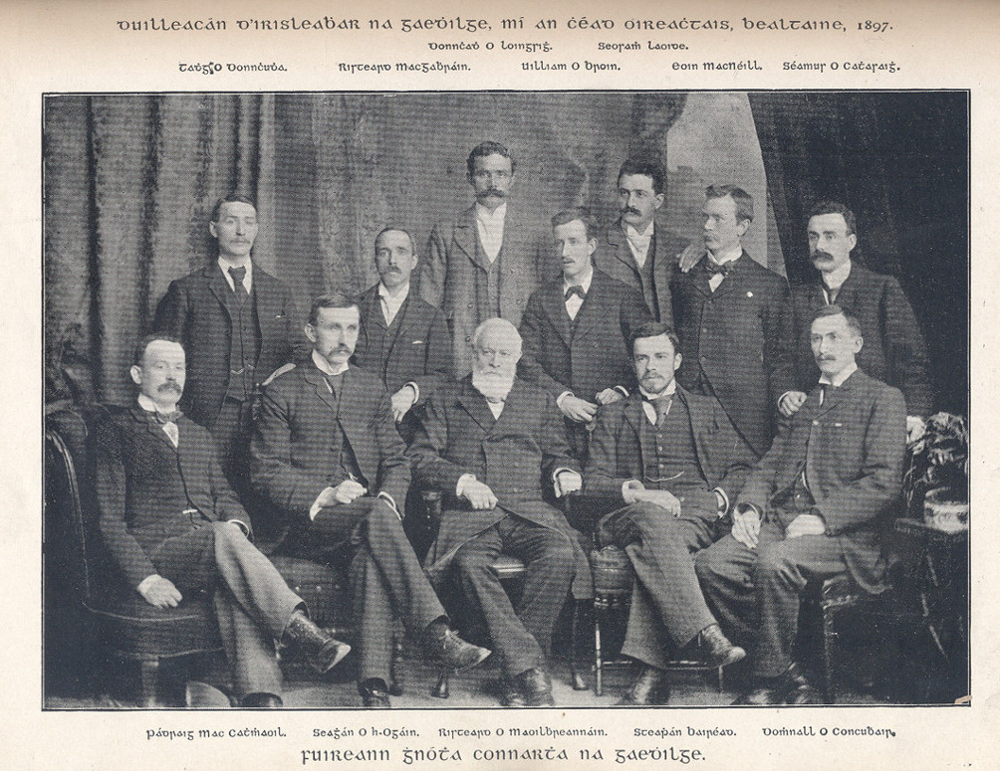

Bunaitheoirí Chonradh an Gaeilge
Sa bhliain 1880 a tháinig **Aontacht na Gaeilge** ar an tsaol, agus cuid de na fir ba mhó gníomh leo mar bhaill as *The Society for the Preservation of the Irish Language*. Le tús a chur le hobair na cúise, thug siad faoi ábhar clóbhuailte a sholáthair i nGaeilge: leabhair scoile, agus leabhar urnaithe. Agus chinn siad go mbunódh siad iris úr. Ní obair í seo a dhéantar gan airgead. Chuir an tUrramach Maxwell an t-airgead ar fáil. Ba é sin an tUrramach Maxwell Close. Ba é an fear seo fosta a d'fhág £1,000 punt ina thiomna ag Acadamh Ríoga na hÉireann mar chuidiú le foclóir Gaeilge a chur i gcló.
D'éirigh le *Aontacht na Gaeilge* an irisleabhar a bhí beartaithe a chur i gcló i mí na Samhna 1882. Ailt agus aistí léannta, a bhain leis an teanga agus a cúis, amhráin agus filíocht agus ábhar foghlamtha an t-ábhar a foilsíodh ann. Bhí an tÁbhar mór ann as seanlitríocht na Gaeilge ann chomh maith, ar ndóighe, An Rúraíocht, agus An Fhiannaíocht san áireamh, mar aon le hábhar ón Ghaeilge Chlasaiceach. Cuireadh a leithéidí seo i gcló, mar shampla: Scéalta ón Táin, Scéalta ó Chéitinn, Iomramh nó beirt, dánta ón mheánaois, aislingí agus filíocht nach iad ón 18ú haois. Tugadh faoi dhíospóireacht léannta i ngnoithe gramadaí, focleolaíochta, agus staire. Cé go raibh Béarla go leor san iris, bhí mórchuid Gaeilge ann, agus ba léir gur aici a bhí tús áite. Tháinig an Ghaeilge ar ais de phreab i saol intleachtach na hÉireann, rinneadh nuatheanga chlóbhuailte sholadach di le haon bhuille amháin. I ndiaidh tamaill, toisíodh ar ábhar ón bhéaloidis a fhoilsiú - ábhar a bhí ar fáil go flúirseach ó mhuintir na Gaeltachta, san am.